Úkol 02 - Želva Žofka
Domácí úkol
Část 1
Nejprve předělejte nebo dodělejte program z hodiny.
Konkrétně obrazce domečku a prasátka.
Vytvořte metodu nakresliDomecek() a zavolejte ji v hlavním programu.
Podobně, jak jsme to dělali v hodině s metodou nakresliHvezdicku().
Dále vytvořte metodu nakresliPrasatko(),
která bude pro svoje účely volat nakresliDomecek() a dokreslí nožičky
(jako bonus můžete dokreslit i ocásek).

Část 2
Nakreslete několik obrazců podle obrázků níže.
Pro každý obrázek vytvořte metodu a případně uvnitř volejte další metody.
Část 3
Nakreslete kompozici podle obrázku níže.

Část 4
Pomocí želvy nakreslete svoje křestní jméno. Na každé písmeno vytvořte samostatnou metodu.
Odevzdání domácího úkolu
Domácí úkol (složku s projektem 10-Turtle)
zabalte pomocí 7-Zipu pod jménem Ukol02-Vase_Jmeno.7z.
(Případně lze použít prostý zip, například na Macu).
Takto vytvořený archív nahrajte na Google Drive
do složky Ukol02.
Vytvořte snímek obrazovky spuštěného programu a pochlubte se s ním v galerii na Facebooku.
Pokud byste chtěli odevzdat revizi úkolu (např. po opravě),
zabalte ji a nahrajte ji na stejný Google Drive znovu,
jen tentokrát se jménem Ukol02-Vase_Jmeno-verze2.7z